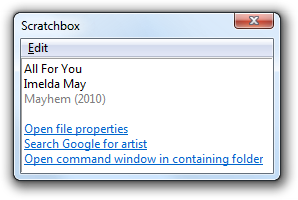
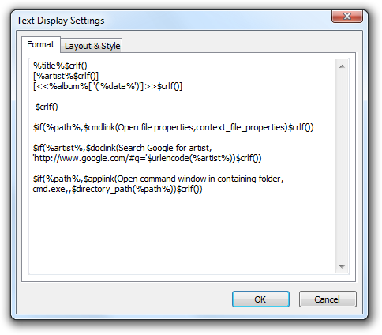
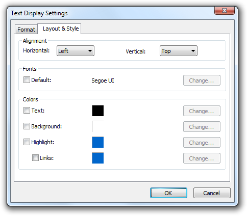

Text Display (foo_textdisplay) 1.1 beta 1
Introduction
Text Display is a UI Element for the foobar2000 Default User Interface. It displays text that is generated from the meta data of a track using a title formatting script. Text Display supports only limited support for formatting the displayed text. Paragraphs can be dimmed or highlighted or they can be turned into clickable links that run an application, a foobar2000 menu command or open a document or web site.
Installation
TODO
Configuration
The context menu for the Text Display UI Element contains two commands that are related to configuration. If "Prefer playing track" is enabled, the element always shows information about the playing track during playback and falls back to the first item of the current selection when playback is stopped. If it is enabled, the element always displays information about the first item of the current selection. The "Settings..." command opens the Text Display Settings dialog.
Changes in the options in the settings dialog will be immediately reflected in the UI element itself. When the OK button is clicked, the changes are applied permanently and the settings dialog is closed. When the Cancel button is clicked, the configuration changes are discarded and the settings dialog is closed. Closing the settings dialog through other means like pressing the Escape key or clicking the close button in the window caption bar has the same effect as clicking Cancel.
The Format tab contains only a text control to enter the title formatting string used to format the displayed information. The $crlf() function can be used to insert a linebreak in the output. There are no other formatting options that can be used in the title formatting script.
The only custom field is %isplaying% which is defined as "1" if "Prefer playing track" is enabled and playback is not stopped. Otherwise it is undefined.
The Layout & Style tab contains options that affect position, font and colors of the display text. By default, the element uses the default font and the text and background colors that are configured in the Default User Interface, but those settings can be overridden on this tab.
Links
- Text Display Forum Thread
The Text Display thread on the foobar2000 forum. - Text Display Title Formatting Help
Describes the title formatting features that Text Display provides. - Change Log
Describes the changes made between different versions of Text Display. - Roadmap
Describes the plan for the further development of Text Display. - Sample Theme File
The foobar2000 theme file (.fth) for the Text Display configuration used for the screenshots in this document.
Frequently Asked Questions
- Is it possible to hide the vertical scroll bar?
No, and no such option is planned. - Is it possible to disable the word-wrapping?
No. - Is it possible to use tabs or color codes in title formatting string?
No. - Is it possible to display the content of a text file?
No. - Is it possible to display lyrics that are stored in tags?
Yes. For example, you could set the format to "$if2(%lyrics%,No lyrics available)". - The answer to "Is it possible to do X?" is "No" without including "no such option is planned". Does that mean X will be implemented eventually?
No, there is no such implied promise.